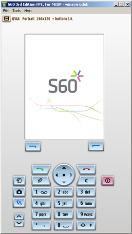

Starting the S60 emulator from the Windows Start menu
Steps
From the
Start
menu, select
Start > All Programs > S60 Developer Tools > 3rd Edition FP1 SDK > MIDP > Emulator
.
Results
The emulator starts:

Figure 2:
S60 SDK emulator